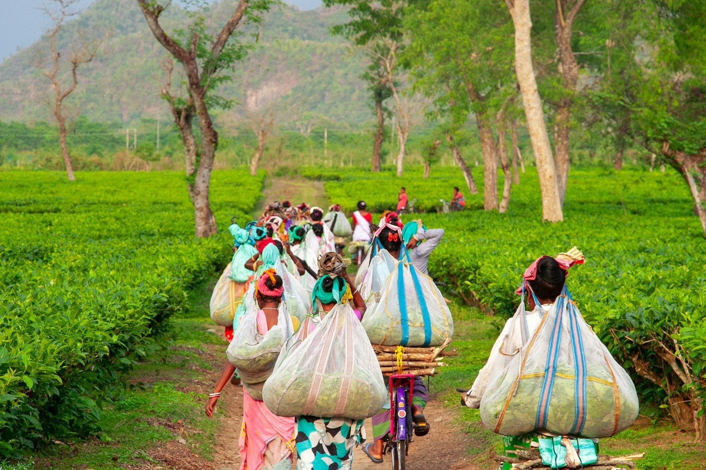
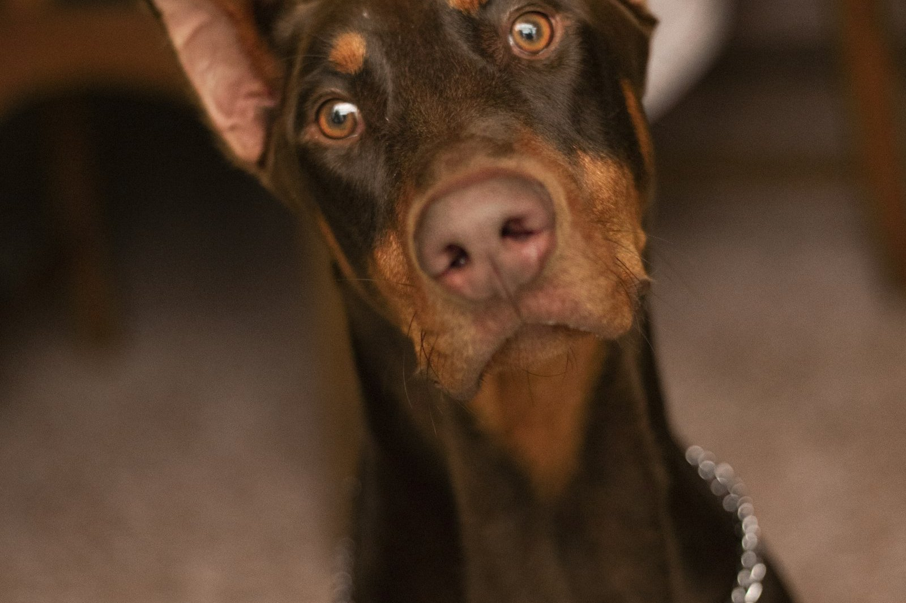
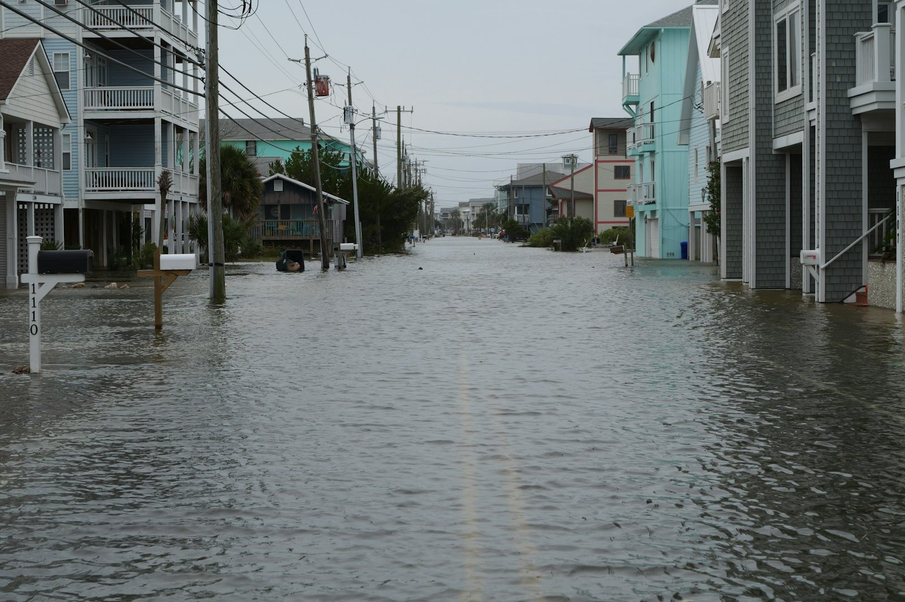

Numero 5 · 23 novembre 2026
Quarant’anni in bicicletta
Il numero così come è arrivato agli iscritti.
Buongiorno
Un'infermiera che per quarant'anni ha pedalato tra le piantagioni di tè perché nessun bambino nascesse più senza aiuto. Una dobermann che non si stacca dalla culla. Un vicino che attraversa una strada allagata invece di aspettare. E un veterano che, sul sito di un rifugio, trova una foto che gli toglie il fiato.
Questa settimana sono storie di chi si accorge prima degli altri. Tutte finiscono bene.
Cinque minuti di storie vere. Buon lunedì.
La storia della settimana
Polio Didimoni

Foto di repertorio · Rohit Dey / Unsplash
Nel 1983 Gita Karmarkar finisce il corso da infermiera ostetrica e viene mandata nella piantagione di tè di Danguajhar, nel Bengala Occidentale, in India. Non c'è un centro medico. Per due anni il suo ambulatorio è la veranda del mercato: una sedia e un tavolo.
Quasi tutti i bambini nascono in casa. Il cordone si taglia con un falcetto o con una canna di bambù affilata, e le infezioni dopo il parto sono frequenti. Gita sale in bicicletta e comincia a girare: dodici, quattordici chilometri al giorno tra le case delle lavoratrici.
Non spaventa nessuno. Parla prima con le donne incinte, da sole. Poi con i mariti. Poi con gli anziani, che di solito decidono dove si partorisce. Per far capire cosa succede a un neonato che non respira, a volte trattiene il fiato davanti a loro. Le lavoratrici stanno nei campi dalle sette alle tre, così lei chiede il permesso scritto di restare fuori fino alle sei di sera. Porta i vaccini direttamente nelle piantagioni.
Le famiglie la chiamano «Polio Didimoni», la signora della polio. Molti, semplicemente, «Maa». «Il mio vero nome non lo sapeva nessuno», racconta.
Tra il 2008 e il 2015, dopo un incidente, subisce nove operazioni che le lasciano un'invalidità del 40 per cento. Torna al lavoro ogni volta. Nella sua zona i parti in ospedale arrivano a un centinaio l'anno, e secondo gli operatori sanitari locali dal 2014 i parti in casa sono praticamente scomparsi.
Il 12 maggio 2026, Giornata internazionale dell'infermiere, la presidente dell'India Droupadi Murmu le ha consegnato il Florence Nightingale Award. Quando gliel'hanno annunciato al telefono, ha pensato a uno scherzo.
Fonti: Partho Burman, The Better India, 14 luglio 2026 — link · The Better India, video del 12 novembre 2026 — link
Le buone nuove
Saraya non si stacca dalla culla

Foto di repertorio · Anna Kozakova / Unsplash
Il 3 settembre, nel Somerset, in Inghilterra, Saraya comincia a comportarsi in modo strano. È la dobermann di Kim, e non si allontana da Alexander, il figlio di cinque mesi: guaisce, cammina avanti e indietro, gli lecca il viso. «Ma cos'ha Saraya?», chiede la nonna, che è in casa con loro.
Il bambino sembra stare benissimo. Qualche ora dopo comincia a piangere e niente lo calma: né uscire, né il bagnetto. Kim lo porta in ospedale. Il cuore batte a più di 200 colpi al minuto.
Un farmaco riporta il battito alla normalità e i medici trovano la causa: una rara anomalia congenita del ritmo cardiaco, che ora si cura con le medicine. «Non mi era nemmeno passato per la testa che potesse essere il cuore», ha raccontato Kim. La storia è stata resa pubblica a novembre, dal Washington Post.
Fonti: Washington Post, 10 novembre 2026 — link · Adnkronos, 10 novembre 2026 — link
Il vicino che non ha aspettato

Foto di repertorio · Wes Warren / Unsplash
Lunedì 2 novembre sulla Florida orientale cade una pioggia da evento millenario. A Palm Bay, nel quartiere di Turtle Creek, l'acqua sale più in fretta di quanto chiunque si aspetti. «Ogni volta che pensavamo fosse il massimo, saliva ancora», racconta Rick Addante.
Rick pensa a due vicini. Terry, ottant'anni, vive da solo con la sua cagnolina Bella ed è appena stato operato al cuore. Un altro, malato di SLA, non riesce a muoversi dalla sedia a rotelle elettrica. Rick fa avanti e indietro tra le case con l'acqua alle ginocchia, prepara Terry, tiene d'occhio l'altro vicino.
Quando arrivano gli idroscivolanti della Florida Fish and Wildlife, aiuta gli agenti a portare a bordo Terry e Bella, terrorizzata dal rumore dei motori. Poi tocca al vicino con la SLA, con la moglie e la figlia. Poi a tre persone bloccate al primo piano di un'altra casa. Intanto altri vicini sistemano il generatore a casa sua e controllano la sua famiglia.
«È stato un lavoro di squadra», dice. «Tante persone, chiese, vicini.»
Fonti: Hayley Vawter, Fox Weather via Yahoo News, 3 novembre 2026 — link · Good News Network, 12 novembre 2026 — link
La foto di Ares
Foto di repertorio · Cortney Chummoungpak / Unsplash
Brandon Quinnelly è stato nei Marines dal 2001 al 2010, quando è stato congedato per un disturbo da stress post-traumatico. Per quattordici anni l'ha aiutato Achille, il suo cane da assistenza. «Mi ha salvato la vita più volte di quante possa contarne.» Quando Achille è morto, Brandon sapeva di aver bisogno di un altro cane.
Intanto, in Oklahoma, al canile di Shawnee arriva un cane che non reagisce più: febbre altissima, pulci, ferite sul muso, una zampa gonfia. Lo curano, e l'unico agente del servizio animali si prende un giorno libero per guidare sette ore, andata e ritorno, fino al centro della Best Friends Animal Society di Bentonville, in Arkansas. Lì il cane si rimette in piedi e prende un'abitudine: dare la zampa a chiunque.
Si chiama Ares. Brandon vede la sua foto sul sito del rifugio e non crede ai suoi occhi: «La somiglianza con Achille è incredibile». Va a conoscerlo e lo adotta il giorno stesso. Il giorno dopo cominciano l'addestramento. «Deve imparare a capire quando non sto bene. Ci vorrà un po'.» Nel frattempo, ha deciso che il letto è suo.
Fonte: Ashley Vega, People, 11 novembre 2026 — link
Il numero della settimana
7 — le ore di strada, andata e ritorno, che l'unico agente del canile di Shawnee ha fatto nel suo giorno libero per portare Ares dove potevano curarlo.
La micro-azione
Questa settimana: chi abita vicino a te? Pensa a un vicino anziano, a chi vive da solo, a chi ha difficoltà a muoversi. Scambiatevi il numero di telefono. Non serve un'alluvione: basta un guasto, una caduta, una sera in cui qualcosa va storto. Rick sapeva già a chi pensare.
E se conosci una storia vera che merita di essere raccontata, rispondi a questa email: la verifichiamo e, se regge, entra in uno dei prossimi numeri.
Tutte le fonti di questo numero
Abbiamo letto ogni articolo e controllato nomi, date e numeri. Se troviamo un errore, lo correggiamo nel numero successivo.
Polio Didimoni
The Better India, Partho Burman, 14 luglio 2026 — articolo
The Better India, video del 12 novembre 2026 — video
Saraya non si stacca dalla culla
Il vicino che non ha aspettato
Fox Weather, Hayley Vawter, via Yahoo News, 3 novembre 2026 — articolo
Good News Network, 12 novembre 2026 — articolo
La foto di Ares
People, Ashley Vega, 11 novembre 2026 — articolo
Le foto sono di repertorio, da Unsplash: Rohit Dey, Anna Kozakova, Wes Warren, Cortney Chummoungpak.
Buonaluce — Buone notizie. Buona luce. Newsletter indipendente, non registrata come testata giornalistica. Ti è arrivata da un amico? Iscriviti su buonaluce.it